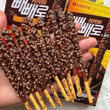
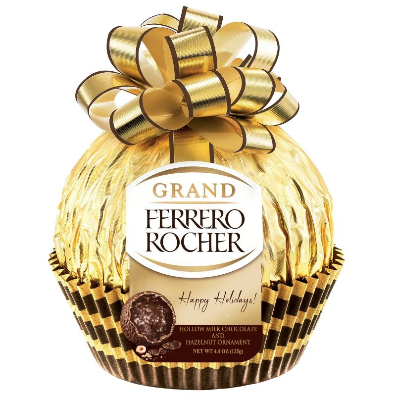
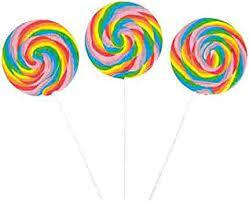

I'd like to introduce three special and interesting days that many people don't know about.
Have fun solving the quiz!
1.
November 11th is a special day in South Korea such as Valentine's Day.
It is the anniversary of giving a stick snack that looks similar to the number 1 to friends or the lover.
What day is this?
(1) Pepero Day

(2) Valentine's Day

(3) White Day

Click here if you want to know more about this day!(1) Japan
(2) France
(3) Italy
Click here if you want to know more about this day!(1) Halloween Day
(2) New Year
(3) Christmas Day
Click here if you want to know more about this day!